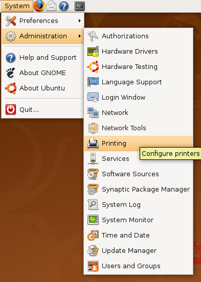
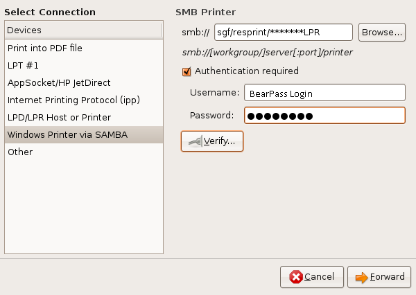
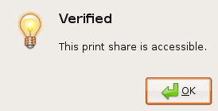
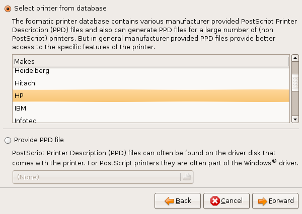
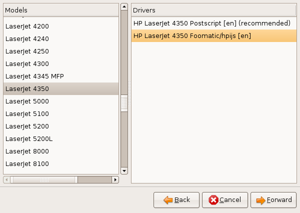
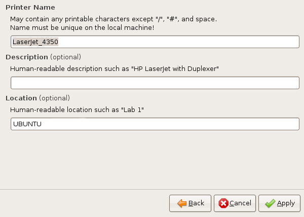

Ubuntu Printer Setup
- Go to System > Administration > Printing, then click on New Printer in the upper right.

- Select Windows Printer via SAMBA. Enter the following informations then click Verify:
SMB: SGF/resprint/[printer name]
Authentication Required: Checked
Username: Missouri State BearPass Login
Password: Missouri State Password

- CAUTION: In the image below, the REsidenceHall specific information is replaced with asterisks(*) --Make sure to use the correct values for your Residence Hall.

- A window stating that your information was verified should appear. Click OK, then click Forward.

- Select HP from the list, then click Forward.

- Select LaserJet 4350, and HP LaserJet 4350 Foomatic/hpijs [en], then click Forward.

- Name the printer if desired, then click Apply.

- You have successfully configured your computer to print to the front desk! NOTE: Whenever you change your Missouri State password, you will have to return to the printer menu and update your authentication information.